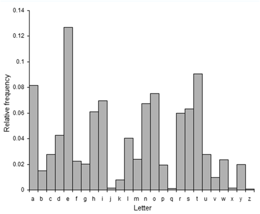

| เนื้อหา 1. การเข้ารหัสในยุค Classic | |
| 1.1 Caesar cipher 1.2 Monoalphabetic ciphers 1.3 Polyalphabetic Encryption 1.4 One-Time Pad 1.5 Playfair cipher |
|
1. การเข้ารหัสในยุค Classic
1.1 Caesar cipher
การเข้ารหัสข้อมูลแบบ Caesar cipher มีขึ้นในราว 50-70 ปีก่อนคริสตกาลสร้างโดยกษัตริย์ Julius Caesar แห่งโรมัน เพื่อใช้เข้ารหัสข้อความในสารที่ส่งในระหว่างการทำศึกสงคราม เพื่อป้องกันไม่ให้ศัตรูสามารถอ่านข้อความในสารนั้นได้หากสารนั้นถูกแย่งชิงไป การเข้ารหัสแบบ Caesar cipher จะใช้วิธีการแทนที่ตัวอักษรต้นฉบับด้วยตัวอักษรที่อยู่ห่างออกไปข้างหน้าสามตัวเช่น แทนที่ตัว A ด้วยตัว D และแทนที่ตัว B ด้วยตัว E เป็นต้น ดังนั้นการเข้ารหัสแบบ Caesar cipher จึงเป็นการเลื่อนตัวอักษรโดยจำนวนครั้งของการเลื่อนเท่ากับสาม (Shiftment, n = 3)
รูปภาพ วิธีการเข้ารหัสแบบ Caesar cipher
การแม็ปของตัวอักษรในการเข้ารหัสแบบ Caesar cipher สามารถเขียนได้ดังนี้
Plain Text: ABCDEFGHIJKLMNOPQRSTUVWXYZ
Cipher Text: DEFGHIJKLMNOPQRSTUVWXYZABC
หากใช้การเข้ารหัสข้อมูลแบบ Caesar cipher เข้ารหัส Fox Code จะได้ดังนี้
Plain text: the quick brown fox jumps over the lazy dog
Cipher text: WKH TXLFN EURZQ IRA MXPSV RYHU WKH ODCB GRJ
Fox Code คือประโยค
“the quick brown fox jumps over the lazy dog”
ซึ่งเป็นประโยคสั้น ๆ ที่มีตัวอักษรภาษาอังกฤษครบทั้ง 26ตัว
ต่อมา Augustus (ผู้เป็น Caesar องค์ที่สองจากทั้งหมด 12 Caesars) ซึ่งเป็นหลานของ Julius Caesar ได้เปลี่ยนสูตรให้แทนที่ตัว A ด้วยตัว C และแทนที่ตัว B ด้วยตัว D ดังนั้นจึงกลายเป็นการเลื่อนตัวอักษรที่มีจำนวนครั้งของการเลื่อนเท่ากับสอง (Shiftment, n = 2)
การเข้ารหัสทั้งสองวิธีนี้สามารถถูกเบรค (Break) ได้โดยง่าย (การเบรคในที่นี้หมายถึงการถอดรหัสข้อมูลออกมาได้ ถึงแม้จะไม่ทราบวิธีการเข้ารหัสและไม่มีกุญแจที่ใช้ถอดรหัสก็ตาม) การเบรคการเข้ารหัสข้อมูลแบบ Caesar cipher ทำได้โดยการทดลองทำการเลื่อนตัวอักษรทุกตัว โดยทดลองเลื่อนด้วยจำนวน Shiftment ที่ต่างกันคือ n=1, n=2, n=3, ... ไปจนถึง n=26 ซึ่งจะใช้การจำนวนครั้งในการทดสอบสูงสุดเพียง 26 ครั้ง (สำหรับภาษาอังกฤษซึ่งมีเพียง 26 ตัวอักษร) ก็จะสามารถทำการเบรคได้ในที่สุด

1.2 Monoalphabetic ciphers
การเข้ารหัสข้อมูลแบบ Monoalphabetic Cipher (หรือเรียกว่า Monoalphabetic substitution ciphers) คิดค้นโดยชาวอาหรับ โดยใช้วิธีการแทนที่ตัวอักษรแบบ 1 ต่อ 1 (ไม่ใช่การเลื่อน) ตัวอย่างของ Monoalphabetic ciphers ในยุคแรก ๆ คือการเข้ารหัสข้อมูลแบบ Atbash ใช้การแทนที่ตัว A ด้วยตัว Z แทนที่ตัว B ด้วยตัว Y และแทนที่ตัว C ด้วยตัว X เป็นต้น
Plain Text: abcdefghijklmnopqrstuvwxyz
Cipher Text: ZYXWVUTSRQPONMLKJIHGFEDCBA
การเบรค Monoalphabetic ciphers จะทำได้ยากกว่าการเบรค Caesar cipher เนื่องจากมีคู่ที่เป็นไปได้อยู่ 26 ยกกำลัง 26 คู่การเบรคจะต้องใช้การสุ่มไปเรื่อย ๆ จนกว่าจะสำเร็จ ซึ่งจะต้องใช้จำนวนครั้งในการ
คำนวณการคำนวณถึง 26! ครั้ง (26! = 26 x 25 x 24 x 23 x … x 1)
การเบรค Monoalphabetic ciphers สามารถทำได้อีกวิธีหนึ่งคือการวิเคราะห์ความถี่ของตัวอักษรที่ปรากฏ (frequency analysis) ตัวอย่างเช่นตัวอักษร e กับ t จะเกิดบ่อยที่สุดในข้อความภาษาอังกฤษ โดยอักษร e มีอัตราการเกิดบ่อยถึง 13% ส่วนอักษร t มีอัตราการเกิดบ่อยถึง 9%

ความถี่ของตัวอักษรที่ปรากฏ
ตัวอักษรที่พบได้บ่อยมากได้แก่ e, t, a, i, o, n, s, h, y, d และ l ตามลำดับ หากนำมาเรียงตามลำดับจากพบได้มากไปจนถึงพบได้น้อยการนำตัวอักษรที่ใช้บ่อยไปใช้เพื่อถอดรหัสแบบ Monoalphabetic ciphers จะสามารถทำให้เดาและถอดรหัสได้เร็วขึ้น เช่นหากพิจารณาข้อมูลที่เข้ารหัสด้วย Monoalphabetic ciphers แล้วพบว่ามีตัวอักษรตัวหนึ่งที่พบได้บ่อยที่สุด ก็อาจจะสันนิษฐานได้ว่าเป็นตัวอักษรนั้นเป็นตัวอักษรสามารถถอดรหัสกลับได้เป็นตัว e เป็นต้น
ความถี่ของตัวอักษรที่ปรากฏ (เรียงตามความถี่มากไปน้อย)

1.3 Polyalphabetic Encryption
Polyalphabetic Encryption คิดค้นโดย Blaise De Vignere ชาวฝรั่งเศสเมื่อประมาณ 500 ปีที่แล้ว อัลกอริทึมนี้ใช้เทคนิคที่ประกอบไปด้วย Multiple Monoalpha Cipher คือมี Monoalphabetic ciphers หลาย ๆ ตัวประกอบกัน ซึ่งจะมีการกำหนดระยะห่างให้กับตัวอักษรก่อนโดยระยะห่างในแต่ละช่วงจะไม่เท่ากันตัวอย่างเช่น n = 7 ให้เป็น C1 และ n = 15 ให้เป็น C2 หลังจากนั้นกำหนด รูปแบบ (Pattern) ในการใส่ข้อมูล เช่น C1, C2, C2, C1, C2 เป็นต้น
เทคนิคนี้จะใช้ในช่วงสงครามโลกครั้งที่ 1 และยากที่จะถอดรหัสด้วยมือเปล่า แต่ถ้าใช้คอมพิวเตอร์จะสามารถถอดรหัสได้ง่าย นอกจากนั้นหากต้องการจะเบรคโดยใช้คอมพิวเตอร์ก็จะทำการเบรคได้ง่ายเช่นกัน ผู้ที่เบรค Polyalphabetic Encryption ได้เป็นชาวรัสเซียชื่อ Friedrich Kasiski เบรคได้ในปี 1863 โดยให้ข้อสังเกตว่าถ้าได้ Cipher Text ที่มีความยาวมากพอ Pattern จะเริ่มซ้ำ และสามารถที่จะเห็นความเหมือนของ Cipher text โดยดูที่ Frequency Analysis ตัวอักษรแต่ละตัวปรากฏบ่อยแค่ไหน

1.4 One-Time Pad
One-Time Pad คิดค้นโดย Gilbert Vernam ชาวอังกฤษในช่วงสงครามโลกครั้งที่ 1 เป็นวิธีการเพิ่มความสามารถในการเข้ารหัสให้กับ Polyalphabetic Encryption โดยใช้การแม็ปจาก 1 ตัวอักษรให้เป็นไปได้หลายตัวอักษร ซึ่งมีวิธีการดังนี้
- ใช้ Key ที่มีขนาดเท่ากันกับ Plain Text
- Cipher Text ที่เป็นคำนวณออกมาได้จะมีขนาดเท่ากันกับขนาดของ Plain Text
- ตัวอักษรทุกตัวจะต้องมีการเปลี่ยนหมดเช่นหาก L ตัวแรกแม็ปได้เป็น N (สมมุติ) แล้ว L ตัวที่สองจะต้องแม็ปได้เป็นตัวอื่นเช่นตัว V เป็นต้น
- ใช้ Operation ง่าย ๆ เช่น + เพื่อเข้ารหัสและ - เพื่อถอดรหัส หรือใช้ XOR สำหรับทั้งการเข้ารหัสและถอดรหัส
การเข้ารหัสแบบ One-Time Pad นี้ Cipher Text จะมีความเป็น Random มากหรือน้อยขึ้นอยู่กับความเป็น Random ของ Key ตัวอย่างการเข้ารหัสด้วยวิธี One-Time Pad แสดงดังนี้ (จะเห็นได้ว่า L ตัวแรกแม็ปได้เป็น N ส่วน L ตัวที่สองแม็ปได้เป็น V ขึ้นอยู่กับคีย์
Plain Text : H E L L O
Key : X M C K L
Cipher Text : E Q N V Z
แต่อย่างไรก็ตาม One-Time Pad ก็ยังมีปัญหาอยู่เช่น Key ที่ใหญ่เท่ากับ Plain Text จะต้องใช้พื้นที่มากสำหรับเก็บ Key นอกจากนั้น Key ที่ใหญ่ก็ทำให้ใช้งานได้อย่างลำบาก (หากเทียบกับการใช้ Key ที่มีขนาดเล็ก) นอกจากนั้นผู้ส่งข้อความจะต้องมีการส่ง Key ไปยังปลายทางเพื่อใช้ในการถอดรหัส ซึ่งอาจจะทำให้ Key ถูกขโมยได้ในระหว่างขั้นตอนการส่งคีย์

1.5 Playfair cipher
Playfair cipher เป็น Block Cipher ตัวแรกเกิดขึ้นในปี ค.ศ. 1854 โดย Sir Charles Wheatstone ซึ่งเล่าให้ Baron Playfair ฟัง แล้วจากนั้นก็ถูกเล่าต่อให้ Albert และ Load Palmerston ฟังบนโต๊ะอาหารเย็น Playfair cipher ถูกใช้ในกองกำลังทางประเทศสหราชอาณาจักรในสงครามโลกครั้งที่ 1 มีขบวนการทำงานของอัลกอริทึมดังนี้
(1) สร้างตาราง Key ขนาด 5 x 5 = 25 แบบสุ่มโดยตัดตัว Q ออก ตัวอย่าง Key ขนาด 5x5
(2) แบ่งตัวอักษร Plain Text ต้นฉบับออกมาเป็นคู่ ๆ หากมีตัวอักษรที่ติดกันให้เอา X คั่นกลาง และหากตัวสุดท้ายไม่ครบคู่ให้ใส่ Z เข้าไปแทนเช่น ต้องการเข้ารหัสข้อความว่า "Hide the gold in the tree stump" ก็สามารถจัดตัวอักษรเป็นคู่ๆ ได้ดังนี้
(3) ถ้าไม่อยู่ในแถวและ Column เดียวกัน ให้แทนที่ตัวอักษรแบบไขว้กัน เช่น HI ในข้อความต้นฉบับ (H ไม่ได้อยู่แถวเดียวกันกับ I และ H ก็ไม่ได้อยู่ในColumnเดียวกันกับ I) จะกลายเป็น BM (H กลายเป็น I และ B กลายเป็น M)
(4) ถ้า 2 ตัวอักษรอยู่ Column เดียวกัน ให้เอาตัวอักษรที่อยู่ข้างล่างติดกันมาแทนที่ โดยทำทีละตัว (หากตัวอักษรนั้นอยู่ล่างสุดให้เอาตัวบนสุดมาแทนที่) เช่น DE ในข้อความต้นฉบับ จะกลายเป็น ND เนื่องจาก D ถูกแทนที่ด้วย N ส่วน E ถูกแทนที่ด้วย D
(5) ถ้า 2 ตัวอักษรอยู่แถวเดียวกัน ให้เอาตัวอักษรที่อยู่ขวามือมาแทนที่ โดยทำทีละตัว (หากตัวอักษรนั้นอยู่ขวาสุดให้เอาตัวซ้ายสุดมาแทนที่) เช่น TU ในข้อความต้นฉบับ จะกลายเป็น UV เนื่องจาก T ถูกแทนที่ด้วย U ส่วน U ถูกแทนที่ด้วย V
หากทำการเข้ารหัสแล้วจะได้ดังนี้
Plain Text: HI DE TH EG OL DI NT HE TR EX ES TU MP
Cipher Text: BM ND ZB XD KY BE JV DM UI XM MN UV IF